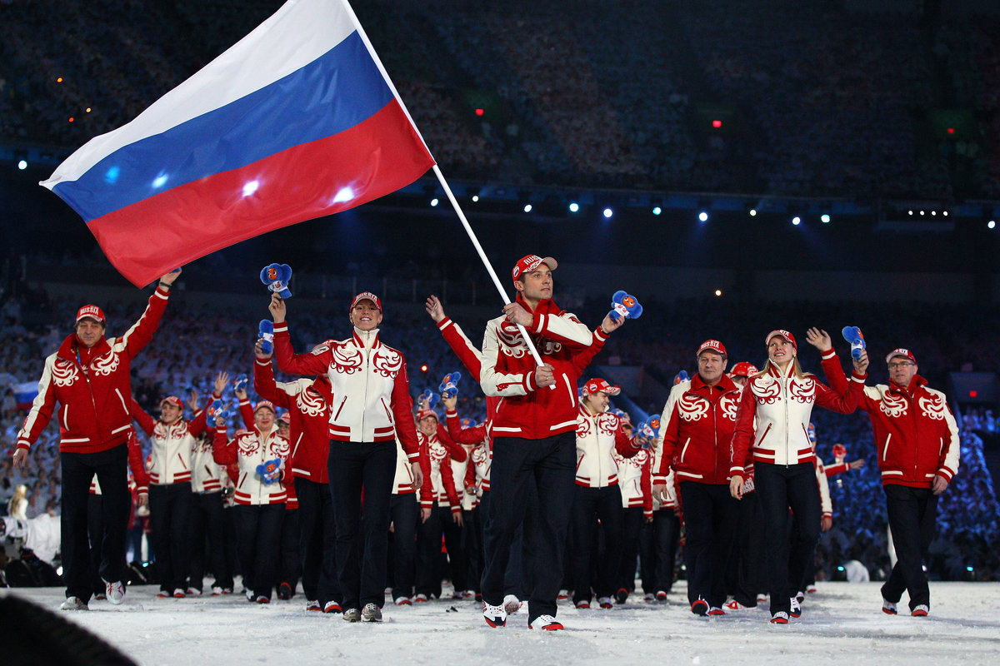

SPORT-EXSPRESТЫКАТЬ СЮДА |
||
|---|---|---|
|
|

The biggest country in the world offers a striking variety of landscapes and weather conditions. Here you can find arctic zones, covered with ice and snow all-year round, huge virgin pine forests, inaccessible rugged mountains, endless plains and sandy beaches with lush subtropical vegetation. This diversity creates opportunities for almost all known sports activities – from swimming and watersports at the seaside through hiking and cycling along the roads that reach the horizon to skiing in all seasons in Siberia and the Caucasus Mountains. Cruising is also very attractive to tourists in Russia, as it allows them to explore some of the most beautiful and important cities and cultural sites in the world. Swimming Russia has an extremely long coastline, but only a negligible part of it is suitable for swimming or other watersports. The Black Sea coast in the southwestern end of the country has been the leading seaside holiday destination from the time of the USSR, when the elite of the country used it as a place for summer relaxation. Today, the region, with its centre Sochi, is far from its old fame and glamour, but is still the major Russian seaside resort. Swimming conditions are very good with high water temperatures and the saltines being twice lower than in the ocean. Countless swimming opportunities are available in the interior in the country – clean lakes and rivers with sandy beaches and copious public swimming pools and aqua parks in larger cities. Typically, the main Russian activity is ice diving – one of the most extreme activities known. It can be practised in the White Sea, which is always covered with at least a one metre crust of ice. Specialised diving clubs organise the dives and provide everything necessary. Russia has an extremely long coastline, but only a negligible part of it is suitable for swimming or other watersports. The Black Sea coast in the southwestern end of the country has been the leading seaside holiday destination from the time of the USSR, when the elite of the country used it as a place for summer relaxation. Today, the region, with its centre Sochi, is far from its old fame and glamour, but is still the major Russian seaside resort. Swimming conditions are very good with high water temperatures and the saltines being twice lower than in the ocean. Countless swimming opportunities are available in the interior in the country – clean lakes and rivers with sandy beaches and copious public swimming pools and aqua parks in larger cities. Typically, the main Russian activity is ice diving – one of the most extreme activities known. It can be practised in the White Sea, which is always covered with at least a one metre crust of ice. Specialised diving clubs organise the dives and provide everything necessary. Russia has an extremely long coastline, but only a negligible part of it is suitable for swimming or other watersports. The Black Sea coast in the southwestern end of the country has been the leading seaside holiday destination from the time of the USSR, when the elite of the country used it as a place for summer relaxation. Today, the region, with its centre Sochi, is far from its old fame and glamour, but is still the major Russian seaside resort. Swimming conditions are very good with high water temperatures and the saltines being twice lower than in the ocean. Countless swimming opportunities are available in the interior in the country – clean lakes and rivers with sandy beaches and copious public swimming pools and aqua parks in larger cities. Typically, the main Russian activity is ice diving – one of the most extreme activities known. It can be practised in the White Sea, which is always covered with at least a one metre crust of ice. Specialised diving clubs organise the dives and provide everything necessary. |
|